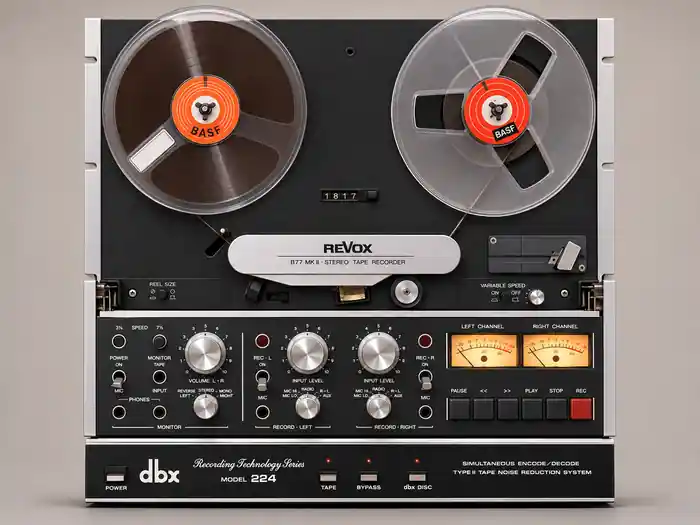

Keep identity stable
Objects carry 128-bit identifiers and the namespace supports UTF-8 names. The transaction and extent model separates logical identity from where bytes happen to be stored.
Workbench · How the projects fit together
The software projects are not one application split into dozens of repositories. Some are independent products, some own reusable engines, and others own a single calendar, clock or filesystem format. This is where the major systems, their boundaries and the work still ahead are explained.
Foundation · Operating system
A collection of individually owned components intended to work as one operating environment.
InfiltratorOS is the integration point, not a duplicate home for every subsystem. Its current deliverable is an amd64 integration package for a Debian/Linux Mint environment. It establishes the layout, shared resources and installation sequence for independently maintained components. A completed standalone operating system and graphical Setup installer are still future milestones.
The architectural split matters. Libraries supplies portable C11 mechanisms and public contracts. Boot handles the firmware-stage selection of operating systems and uses filesystem-specific Common V2 shared objects. The separate Kernel repository tracks the native-kernel development path, with a qualified QEMU milestone but no claim that the resulting kernel is ready for everyday hardware. Files is a native file manager, and Software owns application discovery, package operations and update workflows.
Ownership stays explicit: a filesystem repository defines the behaviour of its format, the common layer defines the interface, and the loader or application consumes the capability. The old central Filesystems repository is transitional while the engines move to their independent homes.
Builds, emulated boots and component tests are evidence of particular milestones, not proof that every subsystem is ready for a general-purpose installation. Current qualification is maintained in each repository.
Storage · Original format
What should survive a crash, and how can the filesystem prove what survived?
InfiltratorFS is a clean-sheet filesystem with its own persistent format, transactions, allocation model and recovery rules. The filesystem itself owns these decisions; Linux, Windows and future systems are adapters to its behaviour rather than alternative implementations of the format.
Copy-on-write transactions publish new generations without immediately destroying earlier state. Checkpoints, snapshots and reflinks provide ways to retain or share data; sparse files and extent metadata make allocation explicit. CRC64 and SHA-256 form separate metadata and logical-data integrity mechanisms. Inspection, checking and scrub tools expose verification rather than assuming that a successful write call settles the question.
The Linux path includes a native VFS driver and the project has a driverless Windows Explorer access bridge. The experimental Common V2 module shares the portable format engine with a hosted implementation and a read-only BOOT profile. A production-qualified firmware installation and a native Windows filesystem driver are not yet established.
Objects carry 128-bit identifiers and the namespace supports UTF-8 names. The transaction and extent model separates logical identity from where bytes happen to be stored.
Reflinks, snapshots and sparse allocation require explicit rules about ownership, history and future writes. A shared extent is a deliberate state, not an accidental consequence of copying.
Disposable-image tests can inject I/O interruptions. Mounted Linux performance, writeback behaviour, recovery and the firmware bridge have distinct qualification boundaries.
Applications · Practical tools
Not every capability belongs inside the operating system itself.
System Monitor examines the running machine through native system interfaces. Defragmenter inspects offline filesystem allocation and restricts write operations to explicitly qualified formats. Calendar is a Cinnamon panel clock and calendar that can use 31 independently owned calendar systems and 23 clock modules, rather than hard-coding all those rules into one desktop application.
Calculator, Files and Software address different daily tasks: calculation, file operations and package management. RunnerScope follows self-hosted GitHub Actions runners; PowerShell-HAL inserts generated commands for inspection rather than executing them automatically. They can share neutral facilities from Libraries while retaining their own product behaviour and release evidence.
The individually owned calendar, clock and filesystem repositories are available in the complete Projects catalogue. Those modules are building blocks, not claims of dozens of separately finished desktop products.
Vehicle diagnostics · Shared engine
An adapter returns bytes. A diagnostic product must establish what they actually mean.
Link owns the common C11 engine for transport, framing, standard OBD-II, UDS sequencing, telemetry and evidence handling. The manufacturer repositories then provide vehicle identity, module definitions and knowledge specific to Mercedes-Benz, Jaguar, BMW, Audi and Ford. This avoids having five incompatible copies of the same underlying diagnostic machinery.
MBLink uses my C207 E 250 CDI as a real development and evidence vehicle, but the Mercedes-Benz product is not restricted to that model. Discover targets where enabled concentrate on read-only ECU identification, inventory and capture. An unknown value remains unknown until documentation or reproducible evidence supports its interpretation; a newly recognised module does not automatically authorise a new kind of diagnostic request.
The workflow begins with connection and identification, continues through supported module discovery and read-only data requests, and retains captures for interpretation. Reusable interrogation mechanisms belong to Link; Mercedes, Jaguar, BMW, Audi or Ford-specific meanings stay with the corresponding product. This boundary matters whenever a car produces a response the software cannot yet explain.
Simulation · Creative tools
Different user experiences, but the same need for coherent models and clear cause and effect.
Egypt is an original city-building simulation centred on the Nile, work, movement, production and visibly functioning settlements; its repository documents an early native executable shell rather than a completed game. Backyard Racer develops the garage, classifieds, car-building and racing loop as one simulation, with vehicle state and progression owned by the game. Character Profiler is a separate iPhone story-bible application that treats characters, relationships and portable archives as durable data.
These are intentionally separate projects, not hidden modules of InfiltratorOS. Their designs draw on the strengths of older software without claiming to be a reproduction of someone else's program.
Analogue · Real hardware
A different way of seeing an engineering system work.

The equipment
The ReVox B77 Mk II is a two-channel open-reel tape recorder. Its moving reels, transport controls and VU meters make the recording process visible in a way that software often conceals. There are separate left and right line inputs and outputs on the back of my machine.
The dbx Model 224 is an external Type II encode/decode noise-reduction unit. It is part of the recording and playback signal path, not a replacement for the recorder's mechanical transport. The two machines have different jobs, but their settings and connections matter together.
The image here is an illustration of my actual equipment. The website's hardware section is about the machines and their operation, rather than a sales listing or a claim that the redraw is a documentary photograph.
Publishing is a different job
The Projects catalogue maps every public source repository. The Software Centre is the distribution surface for approved Linux packages, installation information and the APT repository. It does not imply that every source module has a user-installable application.
A successful compilation proves a particular build. A deterministic unit test proves the cases it exercised. A boot in QEMU, a mount on test media and a real vehicle capture each establish different evidence. The repositories record those boundaries, and the unfinished work is part of the story.